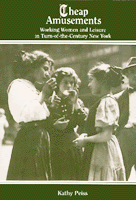

<body bgcolor="#FFFFFF" text="#000000" link="#0000FF" vlink="#CC0000" alink="#CC0000"><center><hr width="350" size="1" align="center" noshade>The dilemmas of work and leisure for women at the turn-of-the-century<hr width="350" size="1" align="center" noshade><p><a href="https://cdcshoppingcart.uchicago.edu/Cart/ChicagoBook.aspx?ISBN=9780877225003&&PRESS=temple" target="_top">Buy this book!</a> | <a href="https://cdcshoppingcart.uchicago.edu/Cart/Cart.aspx?PRESS=temple" target="_top">View Cart</a> | <a href="https://cdcshoppingcart.uchicago.edu/Cart/Cart.aspx?PRESS=temple" target="_top">Check Out</a></p><p></p></center><!--none//--><h1>Cheap Amusements</h1>
<H2>Working Women and Leisure in Turn-of-the-Century New York</H2>
<h3>Kathy Peiss</h3>
<P>paper 0-87722-500-1 $28.95, May 01, <FONT COLOR=#990033>Available</FONT>
<br>Electronic Book 1-43990-553-3 $28.95 <FONT COLOR=#990033></FONT>
<BR> 288 pp
5.5x8.25
</P><BLOCKQUOTE><I>"Peiss has made a major contribution to feminist scholarship...in helping to restore working-class women to history."</I>
<br>&#151<b><i>International Journal of the History of Sport</i></b><I></I></BLOCKQUOTE>
<p>What did young, independent women do for fun and how did they pay their way into New York City's turn-of-the-century pleasure places? <I>Cheap Amusements</I> is a fascinating discussion of young working women whose meager wages often fell short of bare subsistence and rarely allowed for entertainment expenses.
<p>Kathy Peiss follows working women into saloons, dance halls, Coney Island amusement parks, social clubs, and nickelodeons to explore the culture of these young women between 1880 and 1920 as expressed in leisure activities. By examining the rituals and styles they adopted and placing that culture in the larger context of urban working-class life, she offers us a complex picture of the dynamics shaping a working woman's experience and consciousness at the turn-of-the-century. Not only does her analysis lead us to new insights into working-class culture, changing social relations between single men and women, and urban courtship, but it also gives us a fuller understanding of the cultural transformations that gave rise to the commercialization of leisure.
<p>The early twentieth century witnessed the emergence of "heterosocial companionship" as a dominant ideology of gender, affirming mixed-sex patterns of social interaction, in contrast to the nineteenth century's segregated spheres. <I>Cheap Amusements</I> argues that a crucial part of the "reorientation of American culture" originated from below, specifically in the subculture of working women to be found in urban dance halls and amusement resorts.
<BR>&nbsp;<h2>Excerpt</h2><P>Excerpt available at <a href="http://www.temple.edu/tempress">www.temple.edu/tempress</a></p>
<BR>&nbsp;<h2>Reviews</h2>
<p><i>"In her beautifully written, meticulously documented, and precisely argued study, [the author] describes in detail how young working women spent their free time and money."</i>
<br>&#151<b>David Nasaw</b>, <i>dissent</i>
<p><i>"The author is at her best in her 'case studies' of the evolving patterns of activity, socialization, and culture in those dance halls, amusement parks, and motion picture theaters."</i>
<br>&#151<b>Susan Esterbrook Kennedy</b>, <i>The Journal of American History</i>
<p><i>"</i>Cheap Amusements<i> take[s] us beyond the flat stereotypes of 19th-century poor and laboring women.... Peiss' extensive research provides us with a wealth of details about amusements parks, early silent-movie plots, and dance styles in the working-class dance palaces of the city. She traces the development of Coney Island from a male-recreation bastion of gambling houses, saloons, and brothels to a mixed-sex resort of concert halls, dance pavilions, and variety shows where women occupied the audience as well as the stage.... Peiss places prostitution within the context of a range of exchanges between women and men...[which] gave women access to more of the world than their wages alone could bring them, but they also enforced their dependency and rendered them vulnerable to coercion and exploitation."</i>
<br>&#151<b>Lisa Duggan</b>, <i>Ms. Magazine</i>
<BR>&nbsp;<h2>Contents</h2><P>
<p>Acknowledgments
<br>Introduction
<br>1. The Homosocial World of Working-Class Amusements
<br>2. Leisure and Labor
<br>3. Putting on Style
<br>4. Dance Madness
<br>5. The Coney Island Excursion
<br>6. Cheap Theater and the Nickel Dumps
<br>7. Reforming Working Women's Recreation
<br>Conclusion
<br>Notes
<br>Index
</P><BR>&nbsp;<H2>About the Author(s)</H2>
<P><b>Kathy Peiss</b> is Associate Professor of History and Women’s Studies at the University of Massachusetts at Amherst.</P>
<BR><H2>Subject Categories</H2>
<p><A HREF="/tempress/american.html" TARGET="_top">American Studies</a>
<BR><A HREF="/tempress/women.html" TARGET="_top">Women's Studies</a>
<BR><A HREF="/tempress/labor.html" TARGET="_top">Labor Studies and Work</a>
</p>
<p align="center"><a href="https://cdcshoppingcart.uchicago.edu/Cart/ChicagoBook.aspx?ISBN=9780877225003&&PRESS=temple" target="_top">Buy this book!</a> | <a href="https://cdcshoppingcart.uchicago.edu/Cart/Cart.aspx?PRESS=temple" target="_top">View Cart</a> | <a href="https://cdcshoppingcart.uchicago.edu/Cart/Cart.aspx?PRESS=temple" target="_top">Check Out</a></p><p><font face="Arial" size="1"><a href="copyright.html" onMouseOver="window.status='Web Copyright Policy';return true;" onMouseOut="window.status=''" title="Web Copyright Policy">&copy;</a> 2015 <a href="http://www.temple.edu" target="new" onMouseOver="window.status='Link to Temple University home page';return true;" onMouseOut="window.status=''" title="Link to Temple University home page">Temple University</a>. All Rights Reserved. http://www.temple.edu/tempress/titles/358_reg.html</font></p>